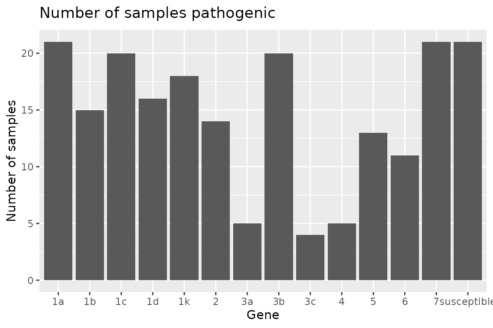
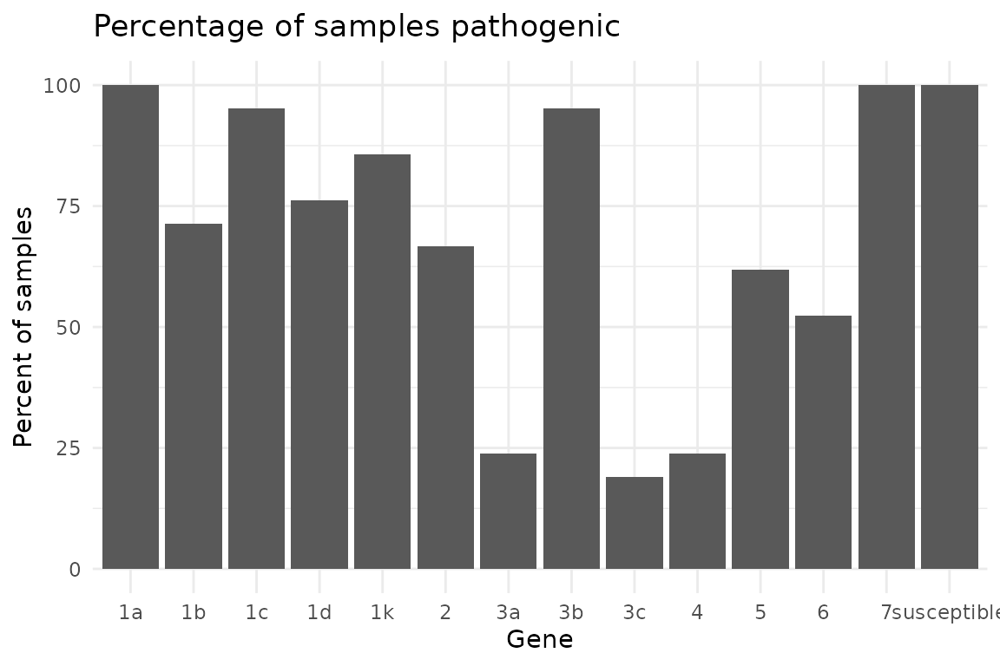
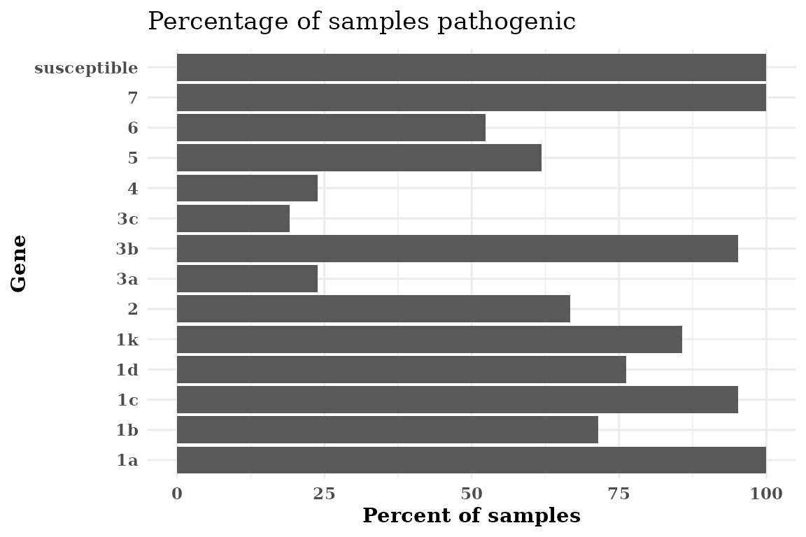
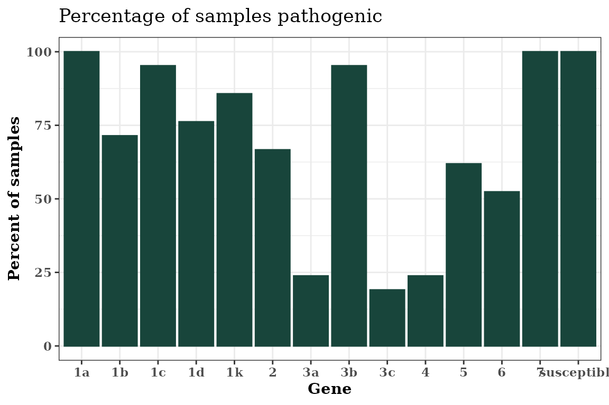
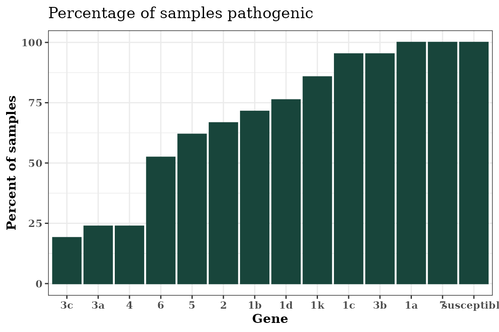

hagis: Tools for Analysis of Plant Pathogen Pathotype Complexities, Distributions and Diversity
Austin McCoy and Zachary Noel
2020-09-06
Source:vignettes/hagis.Rmd
hagis.RmdGetting Started With hagis
The following examples are based on a dataset from Michigan State University Phytophthora sojae surveys for soybean phytophthora root rot pathotyping efforts.
First you’ll want to load in your data set, for right now let’s use a practice data set made for the hagis package and name it P_sojae_survey:
data(P_sojae_survey) P_sojae_survey #> Isolate Line Rps Total HR (1) Lesion (2) #> 1: 1 Williams susceptible 10 0 0 #> 2: 1 Harlon Rps 1a 10 4 0 #> 3: 1 Harosoy 13xx Rps 1b 8 0 0 #> 4: 1 L75-3735 Rps 1c 10 10 0 #> 5: 1 PI 103091 Rps 1d 9 2 0 #> --- #> 290: 21 PRX 145-48 Rps 3c 8 3 1 #> 291: 21 L85-2352 Rps 4 10 3 1 #> 292: 21 L85-3059 Rps 5 10 0 4 #> 293: 21 Harosoy 62XX Rps 6 8 2 1 #> 294: 21 Harosoy Rps 7 10 0 0 #> Lesion to cotyledon (3) Dead (4) total.susc total.resis perc.susc #> 1: 0 10 10 0 100 #> 2: 0 6 6 4 60 #> 3: 0 8 8 0 100 #> 4: 0 0 0 10 0 #> 5: 1 6 7 2 78 #> --- #> 290: 0 4 5 3 63 #> 291: 4 2 7 3 70 #> 292: 0 6 10 0 100 #> 293: 0 5 6 2 75 #> 294: 0 10 10 0 100 #> perc.resis #> 1: 0 #> 2: 40 #> 3: 0 #> 4: 100 #> 5: 22 #> --- #> 290: 38 #> 291: 30 #> 292: 0 #> 293: 25 #> 294: 0
We see in the gene column that each gene is prepended with “Rps”. We can remove this to make the graphs cleaner and report the genes in tables as we would in a manuscript. Note that this will work for any string you enter as the first value, pattern. The second string, replacement, is the replacement value, the third, x, is where to look and make the changes.
P_sojae_survey$Rps <- gsub(pattern = "Rps ", replacement = "", x = P_sojae_survey$Rps) head(P_sojae_survey) #> Isolate Line Rps Total HR (1) Lesion (2) #> 1: 1 Williams susceptible 10 0 0 #> 2: 1 Harlon 1a 10 4 0 #> 3: 1 Harosoy 13xx 1b 8 0 0 #> 4: 1 L75-3735 1c 10 10 0 #> 5: 1 PI 103091 1d 9 2 0 #> 6: 1 Williams 82 1k 10 0 0 #> Lesion to cotyledon (3) Dead (4) total.susc total.resis perc.susc perc.resis #> 1: 0 10 10 0 100 0 #> 2: 0 6 6 4 60 40 #> 3: 0 8 8 0 100 0 #> 4: 0 0 0 10 0 100 #> 5: 1 6 7 2 78 22 #> 6: 0 10 10 0 100 0
This practice data set contains 21 isolates’, Isolate, virulence data on a set of 14 differential soybean cultivars, Line. This package uses the percentage of susceptible, inoculated, plants to determine effective resistance genes, pathotype diversity and frequency, as well as individual isolates pathotypes.
To help ensure that the proper data are used in calculations, the user is asked to provide some information that instruct hagis about what data to use.
Function Arguments Used in hagis
We have strived to make hagis as intuitive to use as possible. Part of that means that we have used the same arguments for the three main functions, summarize_gene(), calculate_complexities() and calculate_diversities(). Each of these functions take the same arguments:
xthis is your data set name, e.g.P_sojae_surveyfrom the example above, allows for the function to identify where it will be pulling these columns (and their associated row values) from to use (i.e. your data collection Excel spreadsheet)cutoffthis value sets the cutoff for susceptible reactions. For example,cutoff = 60means that all genes with 60% or more of the plants rated susceptible will be treated as susceptible. You can change this to whatever percentage you require for your study.controlspecifies the value used in thegenecolumn to denote a susceptible control used in the studysamplespecifies the column header for the column which identifies the isolates testedgenespecifies the column header for the column which identifies the genes testedperc_suscspecifies the column header for the column which identifies the percent susceptible plants for each gene
Ordinarily you would use functions in hagis or other R packages like this:
Rps.summary <- summarize_gene( x = P_sojae_survey, cutoff = 60, control = "susceptible", sample = "Isolate", gene = "Rps", perc_susc = "perc.susc" )
However, because the functions share arguments we can create a list() of arguments and share them with some of the functions from hagis. First, we make a list of the arguments that summarize_gene(), calculate_diversities() and calculate_complexities() use that specify our inputs based on our example data:
hagis_args <- list( x = P_sojae_survey, cutoff = 60, control = "susceptible", sample = "Isolate", gene = "Rps", perc_susc = "perc.susc" )
Now that we have a list of arguments, we can now save time entering the same data for each function and also avoid typos or entering different cutoff values, etc. between the functions.
Determination of Effective Resistance Genes
Below is an example of tables and graphics that can be produced using the summarize_gene() function to identify effective resistance genes tested against the sampled Phytophthora sojae population.
The summarize_gene() function allows you to produce a detailed table showing the number of virulent isolates (N_virulent_isolates), as well as offering a percentage of the isolates tested which are pathogenic on each gene (percent_pathogenic).
Rps.summary <- do.call(summarize_gene, hagis_args) Rps.summary #> gene N_virulent_isolates percent_pathogenic #> 1: susceptible 21 100.00000 #> 2: 1a 21 100.00000 #> 3: 1b 15 71.42857 #> 4: 1c 20 95.23810 #> 5: 1d 16 76.19048 #> 6: 1k 18 85.71429 #> 7: 2 14 66.66667 #> 8: 3a 5 23.80952 #> 9: 3b 20 95.23810 #> 10: 3c 4 19.04762 #> 11: 4 5 23.80952 #> 12: 5 13 61.90476 #> 13: 6 11 52.38095 #> 14: 7 21 100.00000
Using the pander library we can make the table much more attractive in RMarkdown.
| gene | N_virulent_isolates | percent_pathogenic |
|---|---|---|
| susceptible | 21 | 100 |
| 1a | 21 | 100 |
| 1b | 15 | 71.43 |
| 1c | 20 | 95.24 |
| 1d | 16 | 76.19 |
| 1k | 18 | 85.71 |
| 2 | 14 | 66.67 |
| 3a | 5 | 23.81 |
| 3b | 20 | 95.24 |
| 3c | 4 | 19.05 |
| 4 | 5 | 23.81 |
| 5 | 13 | 61.9 |
| 6 | 11 | 52.38 |
| 7 | 21 | 100 |
Plotting Rps Summary Data
hagis also provides functions to quickly graph your data using ggplot2.
Two functions are provided to plot the summary depending on your needs. If you need the frequency, use autoplot(Rps.summary, type = "percentage"), or if you desire the distribution autoplot(Rps.summary, type = "count"). Both return the same graph, only the y-axis change; percent for frequency and n for distribution.
autoplot(Rps.summary, type = "percentage")
autoplot(Rps.summary, type = "count")

Pathotype Complexities
Pathotype frequency, distribution as well as statistics such as mean pathotype complexity can be calculated using the calculate_complexities() function. This function will return a list() of two data.table() objects, grouped_complexities and individual_complexities. grouped_complexities returns a list() as a data.table() object showing the frequency and distribution of pathotype complexities for the sampled population. individual_complexities() returns a list() as a data.table() object showing each individual isolates pathotype complexity. An isolates pathotype complexity refers to the number of resistance genes that it is able to overcome and cause disease on, i.e., a pathotype complexity of “7” would mean that isolate can cause disease on 7 different resistance genes.
complexities <- do.call(calculate_complexities, hagis_args) complexities #> #> Grouped Complexities #> complexity frequency distribution #> 1: 1 0 0 #> 2: 2 0 0 #> 3: 3 0 0 #> 4: 4 0 0 #> 5: 5 1 1 #> 6: 6 2 2 #> 7: 7 2 2 #> 8: 8 7 7 #> 9: 9 0 0 #> 10: 10 5 5 #> 11: 11 3 3 #> 12: 12 0 0 #> 13: 13 1 1 #> #> #> Individual Complexities #> sample N_samp #> 1: 1 10 #> 2: 2 10 #> 3: 3 10 #> 4: 4 8 #> 5: 5 8 #> 6: 6 8 #> 7: 7 8 #> 8: 8 8 #> 9: 9 6 #> 10: 10 5 #> 11: 11 6 #> 12: 12 8 #> 13: 13 7 #> 14: 14 8 #> 15: 15 11 #> 16: 16 7 #> 17: 17 10 #> 18: 18 10 #> 19: 19 11 #> 20: 20 11 #> 21: 21 13 #> sample N_samp
Once again, using pander we can make these tables much more attractive in RMarkdown. Since complexities is a list() object, we can refer to each object directly by name and print them as follows.
pander(complexities$grouped_complexities)
| complexity | frequency | distribution |
|---|---|---|
| 1 | 0 | 0 |
| 2 | 0 | 0 |
| 3 | 0 | 0 |
| 4 | 0 | 0 |
| 5 | 1 | 1 |
| 6 | 2 | 2 |
| 7 | 2 | 2 |
| 8 | 7 | 7 |
| 9 | 0 | 0 |
| 10 | 5 | 5 |
| 11 | 3 | 3 |
| 12 | 0 | 0 |
| 13 | 1 | 1 |
pander(complexities$indvidual_complexities)
| sample | N_samp |
|---|---|
| 1 | 10 |
| 2 | 10 |
| 3 | 10 |
| 4 | 8 |
| 5 | 8 |
| 6 | 8 |
| 7 | 8 |
| 8 | 8 |
| 9 | 6 |
| 10 | 5 |
| 11 | 6 |
| 12 | 8 |
| 13 | 7 |
| 14 | 8 |
| 15 | 11 |
| 16 | 7 |
| 17 | 10 |
| 18 | 10 |
| 19 | 11 |
| 20 | 11 |
| 21 | 13 |
Using summary() will return the mean, standard error (se) and standard deviation (sd) for pathotypes of a complexities object.
| Mean | SD | SE |
|---|---|---|
| 8.714 | 2.004 | 0.4372 |
Plotting Complexities Data
Two functions are provided to plot the complexities depending on your needs. If you need the frequency, use autoplot(complexties, type = "percentage"), or if you desire the distribution autoplot(complexities, type = "count"). Both return the same graph, only the y-axis change; percent for frequency and n for distribution.
autoplot(complexities, type = "percentage")
autoplot(complexities, type = "count")
Diversity Indices, Frequency of Unique Pathotypes and Individual Isolate Pathotypes
Diversity indices are extremely useful when trying to identify differences between two populations. Here, pathotype diversities are calculated for the isolate population using the calculate_diversities() function. Likewise, individual isolates’ pathotypes, number of isolates used in the study, number of pathotypes within the study are calculated.
Five diversity indices are calculated when calling calculate_diversities().
Simple diversity index, which will show the proportion of unique pathotypes to total samples. As the values gets closer to 1, there is greater diversity in pathoypes within the population. Simple diversity is calculated as: \[D = \frac{Np}{Ns}\] where \(Np\) is the number of pathotypes and \(Ns\) is the number of samples.
Gleason diversity index, an alternate version of Simple diversity index, is less sensitive to sample size than the Simple index. \[D = \frac{ (Np - 1) }{ log(Ns)}\] Where \(Np\) is the number of pathotypes and \(Ns\) is the number of samples.
Shannon diversity index is typically between 1.5 and 3.5, as richness and evenness of the population increase, so does the Shannon index value. \[D = -\sum_{i = 1}^{R} p_i \log p_i\] Where \(p_i\) is the proportional abundance of species \(i\).
Simpson diversity index values range from 0 to 1, 1 represents high diversity and 0 represents no diversity. Where diversity is calcuated as: \[D = \sum_{i = 1}^{R} p_i^2\]
Evenness ranges from 0 to 1, as the Eveness value approaches 1, there is a more even distribution of each pathoype’s frequency within the population. Where Evenness is calculated as: \[D = \frac{H'}{log(Np)}\] where \(H'\) is the Shannon diversity index and \(Np\) is the number of pathotypes.
diversity <- do.call(calculate_diversities, hagis_args) diversity #> #> hagis Diversities #> #> Number of Samples 21 #> Number of Pathotypes 19 #> #> Indices #> Simple 0.9047619 #> Gleason 5.912257 #> Shannon 2.912494 #> Simpson 0.9433107 #> Evenness 0.9891509
Or using pander for reporting, a nice table is generated.
pander(diversity)
| Simple | Gleason | Shannon | Simpson | Evenness |
|---|---|---|---|---|
| 0.9048 | 5.912 | 2.912 | 0.9433 | 0.9892 |
Table of Diversities
To generate a table of diversities, use diversities_table(). hagis will automatically create a pander object for you. This is because it is much easier to read the resulting table in the console than the raw data.frame and insert into reports.
diversities_table(diversity)
| Frequency | Pathotype |
|---|---|
| 1 | 1a, 1b, 1c, 1d, 1k, 2, 3a, 3b, 3c, 4, 5, 6, 7 |
| 1 | 1a, 1b, 1c, 1d, 1k, 2, 3a, 3b, 3c, 5, 7 |
| 1 | 1a, 1b, 1c, 1d, 1k, 2, 3a, 3b, 3c, 6, 7 |
| 1 | 1a, 1b, 1c, 1d, 1k, 2, 3b, 4, 5, 6, 7 |
| 1 | 1a, 1b, 1c, 1d, 1k, 2, 3b, 4, 5, 7 |
| 1 | 1a, 1b, 1c, 1d, 1k, 2, 3b, 4, 6, 7 |
| 2 | 1a, 1b, 1c, 1d, 1k, 2, 3b, 7 |
| 1 | 1a, 1b, 1c, 1d, 1k, 2, 6, 7 |
| 1 | 1a, 1b, 1c, 1d, 1k, 3a, 3b, 5, 6, 7 |
| 1 | 1a, 1b, 1c, 1d, 1k, 3b, 7 |
| 1 | 1a, 1b, 1c, 1k, 2, 3b, 3c, 4, 6, 7 |
| 1 | 1a, 1b, 1c, 1k, 3b, 5, 6, 7 |
| 1 | 1a, 1b, 1c, 1k, 3b, 5, 7 |
| 1 | 1a, 1b, 1d, 1k, 2, 3a, 3b, 5, 6, 7 |
| 2 | 1a, 1c, 1d, 1k, 2, 3b, 5, 7 |
| 1 | 1a, 1c, 1d, 1k, 2, 3b, 6, 7 |
| 1 | 1a, 1c, 1d, 3b, 5, 7 |
| 1 | 1a, 1c, 3b, 5, 6, 7 |
| 1 | 1a, 1c, 3b, 5, 7 |
To generate a table of individual pathotypes, use individual_pathotypes(). Here again, hagis provides a pander object for ease of use.
Table of Individual Pathotypes
individual_pathotypes(diversity)
| Sample | Pathotype |
|---|---|
| 1 | 1a, 1b, 1d, 1k, 2, 3a, 3b, 5, 6, 7 |
| 10 | 1a, 1c, 3b, 5, 7 |
| 11 | 1a, 1c, 3b, 5, 6, 7 |
| 12 | 1a, 1b, 1c, 1d, 1k, 2, 6, 7 |
| 13 | 1a, 1b, 1c, 1d, 1k, 3b, 7 |
| 14 | 1a, 1b, 1c, 1k, 3b, 5, 6, 7 |
| 15 | 1a, 1b, 1c, 1d, 1k, 2, 3b, 4, 5, 6, 7 |
| 16 | 1a, 1b, 1c, 1k, 3b, 5, 7 |
| 17 | 1a, 1b, 1c, 1d, 1k, 2, 3b, 4, 5, 7 |
| 18 | 1a, 1b, 1c, 1d, 1k, 3a, 3b, 5, 6, 7 |
| 19 | 1a, 1b, 1c, 1d, 1k, 2, 3a, 3b, 3c, 6, 7 |
| 2 | 1a, 1b, 1c, 1k, 2, 3b, 3c, 4, 6, 7 |
| 20 | 1a, 1b, 1c, 1d, 1k, 2, 3a, 3b, 3c, 5, 7 |
| 21 | 1a, 1b, 1c, 1d, 1k, 2, 3a, 3b, 3c, 4, 5, 6, 7 |
| 3 | 1a, 1b, 1c, 1d, 1k, 2, 3b, 4, 6, 7 |
| 4 | 1a, 1c, 1d, 1k, 2, 3b, 5, 7 |
| 5 | 1a, 1c, 1d, 1k, 2, 3b, 6, 7 |
| 6 | 1a, 1c, 1d, 1k, 2, 3b, 5, 7 |
| 7 | 1a, 1b, 1c, 1d, 1k, 2, 3b, 7 |
| 8 | 1a, 1b, 1c, 1d, 1k, 2, 3b, 7 |
| 9 | 1a, 1c, 1d, 3b, 5, 7 |
Advanced Plotting
hagis autoplot Objects
Since hagis uses ggplot2 to generate its plots, you can easily theme the outputs using common ggplot2 themes and other options provided by hagis directly through autoplot().

Changing the ggplot2 Theme
Use ggplot2’s theme_minimal() theme.
Rps.plot <- Rps.plot + theme_minimal() Rps.plot

Changing the Font
Set the font to be a bold-face serif family font.
Rps.plot <- Rps.plot + theme(text = element_text(face = "bold", family = "serif")) Rps.plot

Make a Horizontal Plot
If your Rps gene names are too long, flipping the axis can make the graph more legible without rotating the x-axis labels.
Rps.plot <- Rps.plot + coord_flip() Rps.plot

Use Colors in Autoplot Objects
You can use named, e.g. “red”, “yellow”, “blue” colors in R or you can use custom hexadecimal color codes. Illustrated below is using MSU Green, hex code #18453b, using theme_bw() with a serif font.
autoplot(Rps.summary, type = "percentage", color = "#18453b") + theme_bw() + theme(text = element_text(face = "bold", family = "serif"))

Sorting the x-axis
You can sort the x-axis of any graph produced using autoplot() in an ascending or descending order using the order parameter in autoplot().
autoplot(Rps.summary, type = "percentage", color = "#18453b", order = "ascending") + theme_bw() + theme(text = element_text(face = "bold", family = "serif"))
